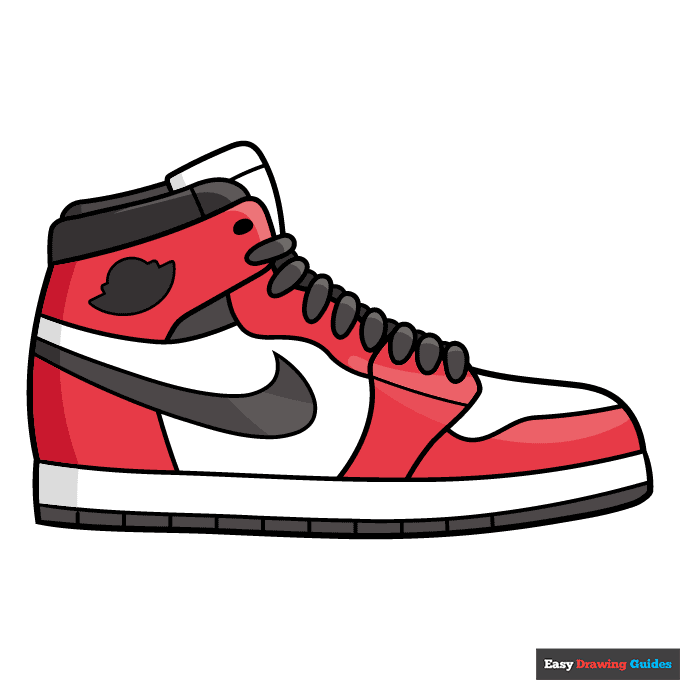

A shoe is an item of footwear intended to protect and comfort the human foot. Though the human foot can adapt to varied terrains and climate conditions, it is vulnerable, and shoes provide protection. Form was originally tied to function, but over time, shoes also became fashion items. Some shoes are worn as safety equipment, such as steel-toe boots, which are required footwear at industrial worksites.
Additionally, shoes have often evolved into many different designs, such as high heels, which are most commonly worn by women during fancy occasions. Contemporary footwear varies vastly in style, complexity and cost. Basic sandals may consist of only a thin sole and simple strap and be sold for a low cost. High fashion shoes made by famous designers may be made of expensive materials, use complex construction and sell for large sums of money. Some shoes are designed for specific purposes, such as boots designed specifically for mountaineering or skiing, while others have more generalized usage such as sneakers which have transformed from a special purpose sport shoe into a general use shoe.
The earliest known shoes are sagebrush bark sandals dating from approximately 7000 or 8000 BC, found in the Fort Rock Cave in the US state of Oregon in 1938.[5] The world's oldest leather shoe, made from a single piece of cowhide laced with a leather cord along seams at the front and back, was found in the Areni-1 cave complex in Armenia in 2008 and is believed to date to 3500 BC.[6][7] Ötzi the Iceman's shoes, dating to 3300 BC, featured brown bearskin bases, deerskin side panels, and a bark-string net, which pulled tight around the foot.[6] The Jotunheimen shoe was discovered in August 2006: archaeologists estimate that this leather shoe was made between 1800 and 1100 BC,[8][9] making it the oldest article of clothing discovered in Scandinavia. Sandals and other plant fiber based tools were found in Cueva de los Murciélagos in Albuñol in southern Spain in 2023, dating to approximately 7500 to 4200 BC, making them what are believed to be the oldest shoes found in Europe.[10] It is thought that shoes may have been used long before this, but because the materials used were highly perishable, it is difficult to find evidence of the earliest footwear.[11] Footprints suggestive of shoes or sandals due to having crisp edges, no signs of toes found and three small divots where leather tying laces/straps would have been attached have been at Garden Route National Park, Addo Elephant National Park and Goukamma Nature Reserve in South Africa.[12] These date back to between 73,000 and 136,000 BP. Consistent with the existence of such shoe is the finding of bone awls dating back to this period that could have made simple footwear.[12] Another source of evidence is the study of the bones of the smaller toes (as opposed to the big toe); it was observed that their thickness decreased approximately 40,000 to 26,000 years ago. This led archaeologists to deduce the existence of common rather than an occasional wearing of shoes as this would lead to less bone growth, resulting in shorter, thinner toes.[13] These earliest designs were very simple, often mere "foot bags" of leather to protect the feet from rocks, debris, and cold.
The basic anatomy of a shoe is recognizable, regardless of the specific style of footwear. All shoes have a sole, which is the bottom of a shoe, in contact with the ground. Soles can be made from a variety of materials, although most modern shoes have soles made from natural rubber, polyurethane, or polyvinyl chloride (PVC) compounds.[54] Soles can be simple—a single material in a single layer—or they can be complex, with multiple structures or layers and materials. When various layers are used, soles may consist of an insole, midsole, and an outsole.[55] The insole is the interior bottom of a shoe, which sits directly beneath the foot under the footbed (also known as sock liner). The purpose of the insole is to attach to the lasting margin of the upper, which is wrapped around the last during the closing of the shoe during the lasting operation. Insoles are usually made of cellulosic paper board or synthetic non woven insole board. Many shoes have removable and replaceable footbeds. Extra cushioning is often added for comfort (to control the shape, moisture, or smell of the shoe) or health reasons (to help deal with differences in the natural shape of the foot or positioning of the foot during standing or walking).[55] The outsole is the layer in direct contact with the ground. Dress shoes often have leather or resin rubber outsoles; casual or work-oriented shoes have outsoles made of natural rubber or a synthetic material like polyurethane. The outsole may comprise a single piece or may be an assembly of separate pieces, often of different materials. On some shoes, the heel of the sole has a rubber plate for durability and traction, while the front is leather for style. Specialized shoes will often have modifications on this design: athletic or so-called cleated shoes like soccer, rugby, baseball and golf shoes have spikes embedded in the outsole to improve traction.[55] The midsole is the layer in between the outsole and the insole, typically there for shock absorption. Some types of shoes, like running shoes, have additional material for shock absorption, usually beneath the heel of the foot, where one puts the most pressure down. Some shoes may not have a midsole at all.[55] The heel is the bottom rear part of a shoe. Its function is to support the heel of the foot. They are often made of the same material as the sole of the shoe. This part can be high for fashion or to make the person look taller, or flat for more practical and comfortable use.[55] On some shoes the inner forward point of the heel is chiselled off, a feature known as a "gentleman's corner". This piece of design is intended to alleviate the problem of the points catching the bottom of trousers and was first observed in the 1930s.[56] A heel is the projection at the back of a shoe which rests below the heel bone. The shoe heel is used to improve the balance of the shoe, increase the height of the wearer, alter posture or other decorative purposes. Sometimes raised, the high heel is common to a form of shoe often worn by women, but sometimes by men too.
Most types of shoes are designed for specific activities. For example, boots are typically designed for work or heavy outdoor use. Athletic shoes are designed for particular sports such as running, walking, or other sports. Some shoes are designed to be worn at more formal occasions, and others are designed for casual wear. There are also a vast variety of shoes designed for different types of dancing. Orthopedic shoes are special types of footwear designed for individuals with particular foot problems or special needs. Clinicians evaluate patient's footwear as a part of their clinical examination. However, it is often based on each individual's needs, with attention to the choice of footwear worn and if the shoe is adequate for the purpose of completing their activities of daily living.[60] Other animals, such as dogs and horses, may also wear special shoes to protect their feet as well. Depending on the activity for which they are designed, some types of footwear may fit into multiple categories. For example, Cowboy boots are considered boots, but may also be worn in more formal occasions and used as dress shoes. Hiking boots incorporate many of the protective features of boots, but also provide the extra flexibility and comfort of many athletic shoes. Flip-flops are considered casual footwear, but have also been worn in formal occasions, such as visits to the White House.
Athletic shoes are designed for various sports activities, focusing on maximizing friction between the foot and the ground. These shoes often utilize materials like rubber to achieve this purpose.[63] The earliest athletic shoes, dating to the mid-19th century, were track spikes with metal cleats for increased traction. Over time, athletic shoe design evolved, with companies like Reebok and Adidas contributing to the development of modern athletic shoes. Notable innovations include rubber-soled athletic shoes and the introduction of specialized shoes for different sports, such as basketball and golf. More recently, minimalist shoes have gained popularity as barefoot running became popular by the late 20th and early 21st century, maintaining optimum flexibility and natural walking while also providing some degree of protection. Their purpose is to allow one's feet and legs to feel more subtly the impacts and forces involved in running, allowing finer adjustments in running style. Shoes specific to the sport of basketball were developed by Chuck Taylor, and are popularly known as Chuck Taylor All-Stars. In 1969, Taylor was inducted into the Naismith Memorial Basketball Hall of Fame in recognition of this development, and in the 1970s, other shoe manufacturers, such as Nike, Adidas, Reebok, and others began imitating this style of athletic shoe.[66] In April 1985, Nike introduced its own brand of basketball shoe which would become popular in its own right, the Air Jordan, named after the then-rookie Chicago Bulls basketball player, Michael Jordan. The Air Jordan line of shoes sold $100 million in their first year.
Boots are a specialized type of footwear that covers the foot and extends up the leg. They serve both functional and fashion purposes, offering protection from elements like water, snow, and mud while also being a fashion statement. Cowboy boots, for instance, are known for their distinctive style and are popular among cowboys in the western United States. Hiking boots, on the other hand, are designed for comfort and support during long walks in rough terrains. Snow boots are ideal for wet or snowy weather, providing warmth and protection against the elements. Additionally, boots are used in specialized activities like skiing, ice skating, and climbing due to their unique features tailored to these activities.[76][77][78][79] Boots may also be attached to snowshoes to increase the distribution of weight over a larger surface area for walking in snow. Ski boots are a specialized snow boot which are used in alpine or cross-country skiing and designed to provide a way to attach the skier to his/her skis using ski bindings. The ski/boot/binding combination is used to effectively transmit control inputs from the skier's legs to the snow. Ice skates are another specialized boot with a metal blade attached to the bottom which is used to propel the wearer across a sheet of ice.[80] Inline skates are similar to ice skates but with a set of three to four wheels in lieu of the blade, which are designed to mimic ice skating on solid surfaces such as wood or concrete.
Various accessories are used to enhance the functionality and comfort of shoes. Crampons provide traction on icy terrain, foam taps adjust shoe fit, heel grips prevent slipping, and ice cleats enhance stability on slippery surfaces. Overshoes protect shoes from rain and snow, while shoe bags are used for storage. Shoe brushes and polishing cloths maintain shoe appearance, while shoe inserts offer additional comfort.